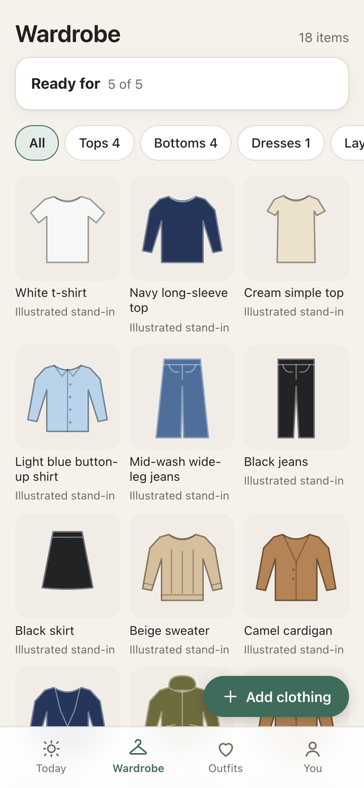
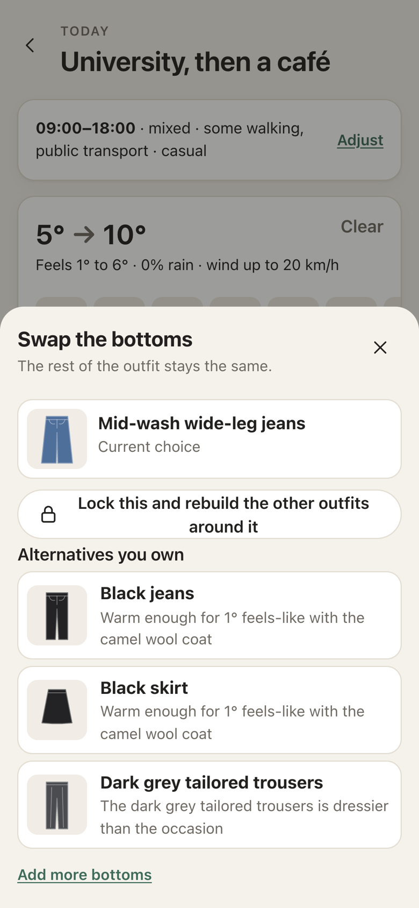
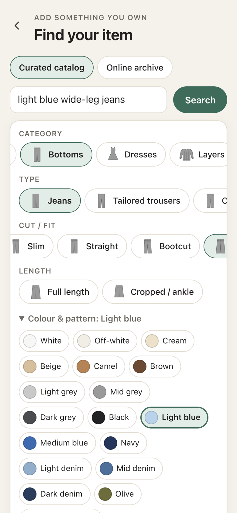

Product case study · Functional MVP
Wardrobe Assistant
Choose an outfit for your day, using the clothes you already own.
A browser-based MVP that combines your wardrobe, your plans and the weather during the hours you are out to suggest up to three explained outfits.
- My role
- Product discovery, requirements, prioritisation, iteration
- Approach
- AI-assisted design and implementation
- Stage
- Functional MVP; user validation pending
- Built with
- Vanilla JavaScript, Open-Meteo, browser storage
The problem
A good-looking outfit isn't enough. It has to work for the whole day.
Getting dressed means accounting for a cold morning walk, hours in a warm lecture hall and a café later, often in clothes that are in the laundry. Competitor testing showed that weather-aware suggestions already exist, so I reframed the opportunity around how quickly someone reaches an outfit they would actually wear.
Can a day-first flow and a faster starter wardrobe help users reach their first useful outfit with less effort?
How it works
From “here is my day” to a few outfits you could realistically wear
-
Start small with a usable wardrobe
Pick everyday basics from 83 curated garment examples, search the larger catalog or upload a photo. A readiness indicator shows which categories are still missing.
- No need to add everything up front
- Warmth and waterproofing start as labelled typical values, never guessed from an image

-
Describe the day, and check the weather for those hours
Choose a preset like University, then a café or describe your plans in your own words. The app reads the forecast only for the hours you're out: coldest and warmest feels-like temperature, rain and wind.
- Editable times, travel and formality
- Manual weather entry if the forecast is unavailable
-
Compare up to three explained options
Suggestions are labelled More relaxed, In between and More polished. Each one explains itself, for example which layer keeps you warm at the coldest hour and what to take off indoors.
- Only clothes you own and that are available
- If something important is missing, the app explains the gap instead of forcing an outfit
-
Adjust, then teach it
Swap any item for an alternative you own, or lock it and rebuild the other outfits around it. After wearing an outfit, feedback such as “too cold” or “too casual” adjusts local, rule-based preferences.
- Every alternative shows why it fits, or why it doesn't
- Transparent rules, not a black-box model

The biggest iteration
A large image source isn't the same as a useful wardrobe catalog
The first version relied on live Wikimedia image search. Many results showed people, street scenes or poorly framed garments, so quick setup lost its value. Fixing wardrobe setup became the main design problem.

Recognisable, relevant examples matter more than the number of results.
People can go straight to the garments they own.
The interpretation is visible and easy to correct.
Jeans in the wrong cut are a poor stand-in, even in the right colour.
Where it stands
A working MVP is the start of validation, not the end
Implementing the journey makes the hypothesis testable. It doesn't prove it.
Checked so far
- Main journeys tested manually in the browser at phone width
- Implementation issues found during iteration and fixed
- Honest fallbacks: missing-clothing guidance, manual weather, labelled stand-in images
What I'd validate next
- Time to a balanced starter wardrobe, and where new users get stuck
- Time to the first outfit someone would actually wear
- Whether outfits work for the whole day, across several days of wear
- Whether feedback reduces repeated mismatches
Catalog garments are currently labelled illustrations. Licensed garment photography is the main remaining visual gap.
Try it yourself
No account needed. Everything you add stays in your own browser. It works best at phone width.